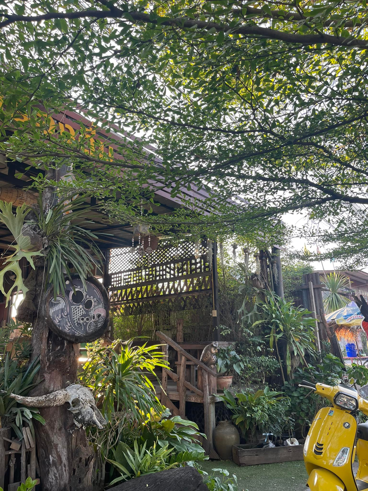
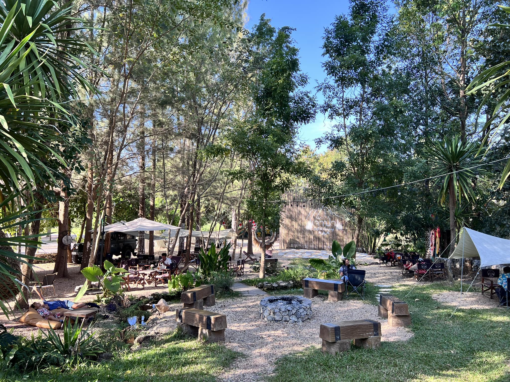

ฮักฮูก
เปิดบริการทุกวัน เวลา 09:00 - 00:00 น. สอบถามเพิ่มเติม โทร. 096 869 0258
ฮักฮูก พิกัดร้าน: ตำบลผานกเค้า อำเภอภูกระดึง อีกหนึ่งร้านอาหารในภูกระดึงที่มาพร้อมเมนูน่าทานหลากหลายเมนู โดยเฉพาะเมนูแซ่บๆ อย่างส้มตำ และเมนูยำ นอกจากนี้ก็ยังมีเมนูอาหารป่า อาหารพื้นเมืองที่ถือเป็นรสชาติจัดจ้านในแบบฉบับของจังหวัดเลยอีกด้วยค่ะ เมนูน่าทานที่ต้องลอง: เมี่ยงหอยแครง, ปลากะพงทอดน้ำปลา, ยำตะไคร้กุ้งสด, ไข่ตุ๋นหม้อไฟ, ตำซั่วผัก, ผัดเผ็ดหมูป่า, ผัดเผ็ดพวงไข่อ่อน และแกงไก่ใส่วุ้นเส้น
เจ้าป่า Cafe & Camping
เปิดบริการทุกวันเสาร์-อาทิตย์ เวลา 10:00 - 20:00 น. สอบถามเพิ่มเติม โทร. 095 198 6485
จ้าป่า Cafe & Camping พิกัดร้าน: ลานกางเต็นท์ ไร่เจ้าป่า บ้านผาสามยอด อากาศเย็นๆ แบบนี้ก็ต้องไม่พลาดที่จะไปคาเฟ่และลานกางเต็นท์ที่มาพร้อมบรรยากาศดีๆ อย่างเจ้าป่า Cafe & Camping สำหรับที่นี่ในส่วนของคาเฟ่จะเปิดบริการเฉพาะวันเสาร์และวันอาทิตย์เท่านั้นค่ะ (หรือสามารถสอบถามเพิ่มเติมได้ที่เพจร้าน) เมนูอาหารก็จะมีให้เลือกทานทั้งอาหาร ขนมหวาน และเครื่องดื่มเลย
